A free weekly Premier League card game. Live at 5ives.org.
Problem
Season-long fantasy football is a big commitment. Pick the wrong captain and you can end up far behind, with months still to play.
What I did
I designed and built a weekly card game. Each week you open a new pack, pick five players and a captain, and score from real matches. A bad week only ever costs you 3 points. I made the product decisions and directed the build with Claude Code.
Outcome
Live since 12 September. 35 player accounts, with 15 to 17 players locking a five each week.
Each week every player gets a sealed pack of 11 player cards and a stadium card. They pick five and a captain before the deadline, and score from the real matches. Leagues rank each week: the top 30% win (3 points), the middle 40% draw (1) and the bottom 30% lose (0).
The game idea and rules came from a friend; I designed and built the product.
Timeline: first commit 4 September, soft launch 12 September, public launch 10 October.
Built with: Next.js · Supabase · FPL and API-Football data · Claude Code
In season-long fantasy football, one bad captain choice or the wrong players on the bench can leave you 30 points or more behind, and it can feel like you'll never catch up. 5ives works week by week instead. You get a new pack to open every week, and a bad week only ever costs you 3 points.
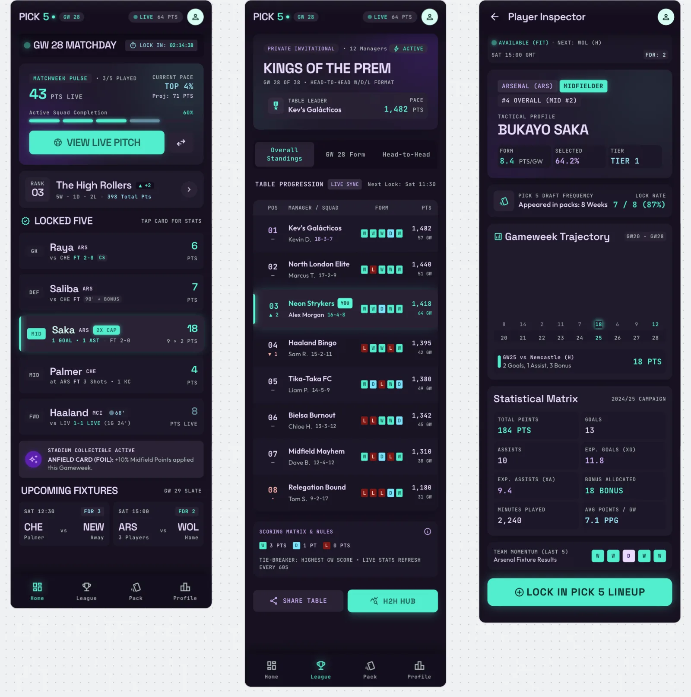
The first concept was a dark stats-app look, made with Google Stitch. I built the first live version with Claude Code, using that concept and a few others as a starting point.
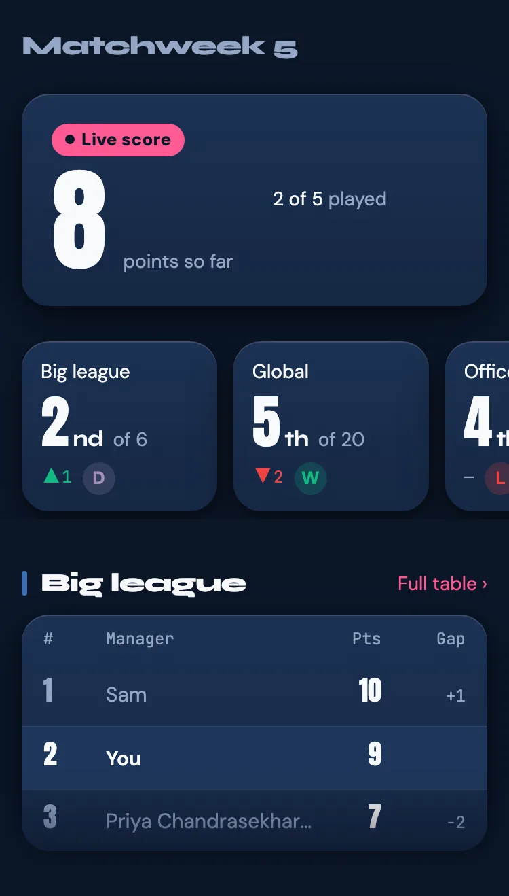
For the restyle I looked at 1990s football magazines and sticker albums.
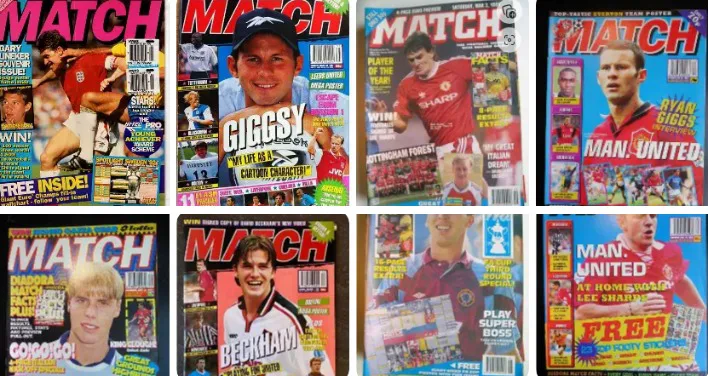
I built five directions in code and compared them on the same screens. I kept one, Album Blue: sky blue, cream and navy, flat panels, square corners, and capital headlines in boxes.
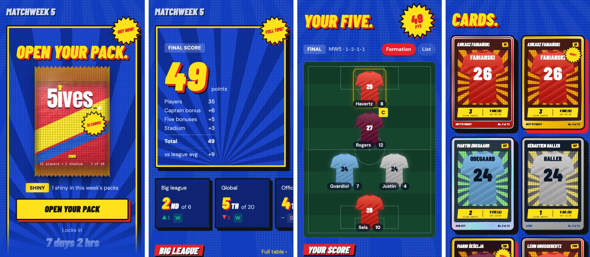
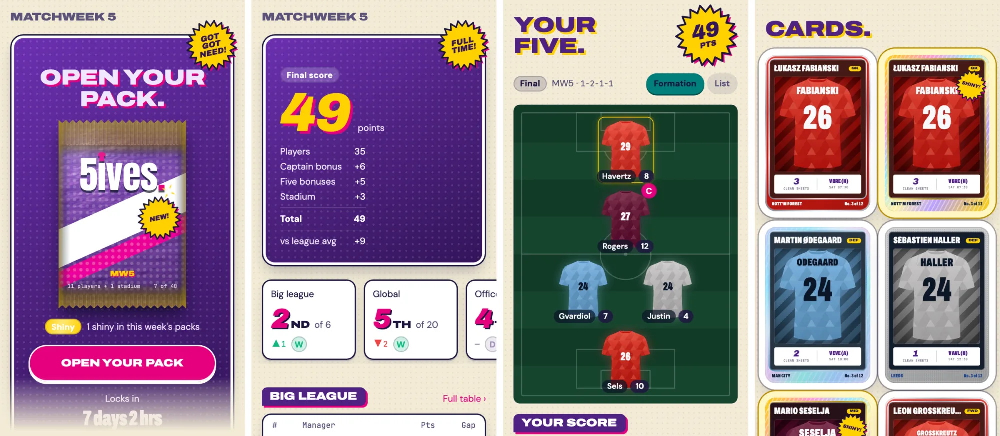
I didn't use a design tool for Album Blue. I worked it out with Claude Code: I gave it the references, looked at each screen, said what wasn't working, and changed it, round after round.
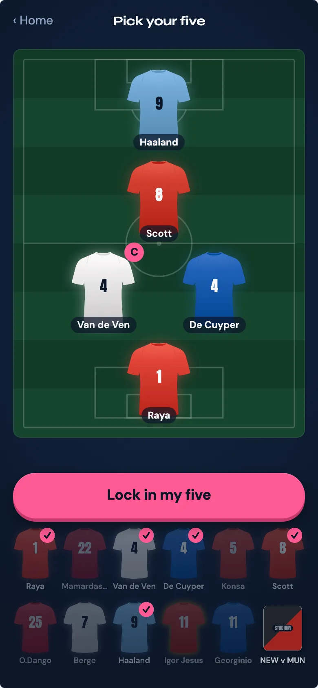
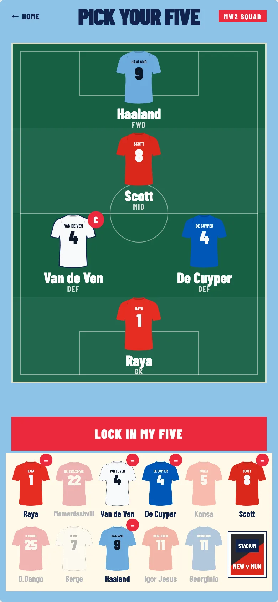
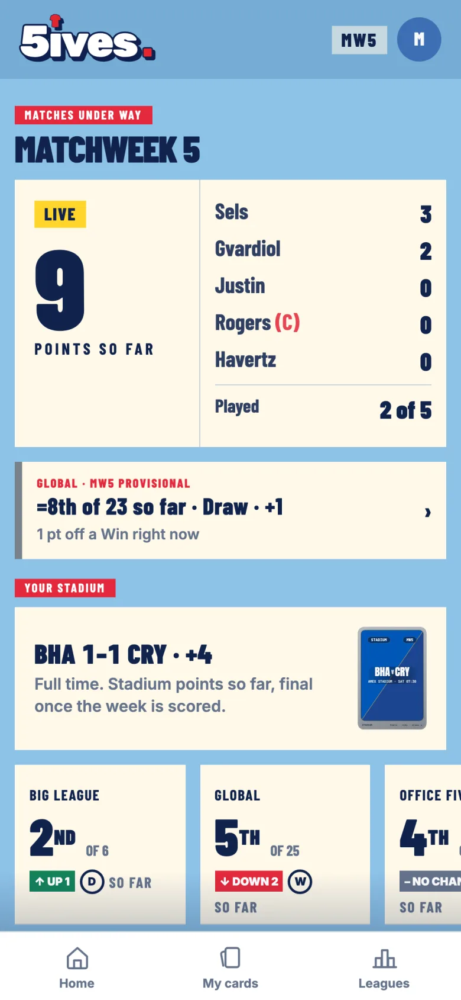
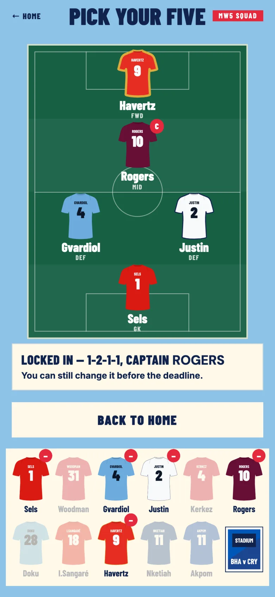
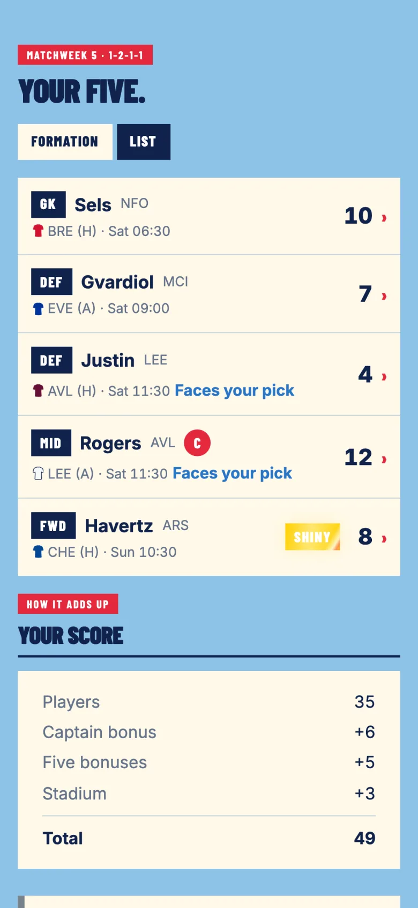
Album Blue has 13 colour tokens and one spacing scale with 7 steps. Gold only appears on shiny cards, so it always means the same thing. I darkened the red so white text on it passes contrast checks.
Colour
Spacing
The restyle mostly worked by remapping tokens. The components already took their colours, type and spacing from tokens, so I changed the values and the components followed, rather than redrawing every screen. It wasn't free: eight behaviours were lost in the move, and the tests found each one so it could be put back.
Later I moved every spacing value onto the 7-step scale: 228 values, checked across 93 screens before and after.
Every component and state can be viewed on its own in 23 preview pages, and 70 browser test files cover the main flows.
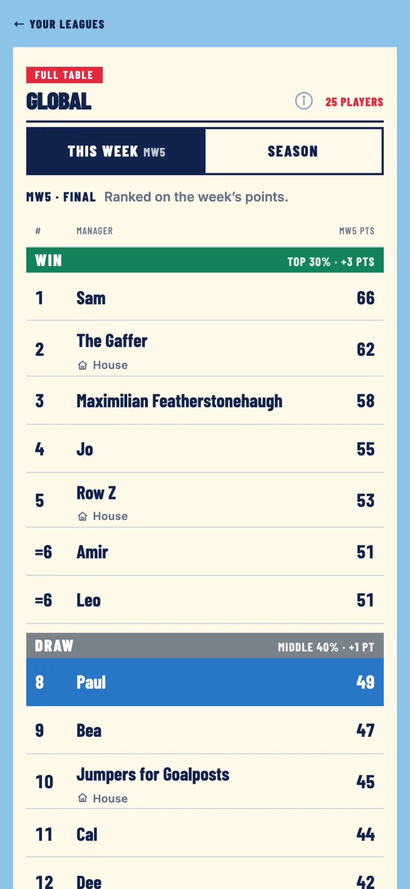
The league table has to work while games are still being played. It switches between this week and the season, splits players into Win, Draw and Loss bands, and marks the order as provisional until games finish. If a score is corrected later, the player sees "Updated: FPL corrected a stat".
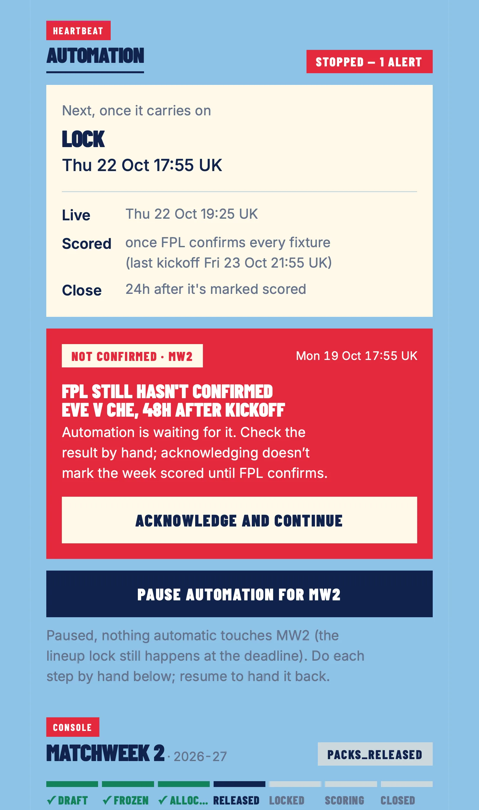
The week runs itself: create, freeze the player pool, deal the packs, release, lock at the deadline, score, close. The console shows each step and what comes next. When something stops the week, it says what and why in plain words.
Problems I had to solve:
FPL started refusing requests from the app's servers on launch day, during live games. It still answered GitHub's servers, so I set up a relay there. The app rejects any relayed data that is old or for the wrong week.
One week was scored too late to release the next week's packs on time. Weeks are now scored on FPL's provisional finish and corrected automatically for 7 days.
The database returns at most 1,000 rows per request. That put about 109 of roughly 211 players in the wrong pack tier, and later left 27 players out of a week's pool. Both now read every row.
Fives locked per week
There's no analytics tool, so I measure the game from the database. A weekly active player is someone who locked a five that week. The numbers are small, which is fine for a side project.
Everyone who signs up is dealt a pack automatically, so the share of packs played fell while the number of players held steady.
Before launch I set two targets, and missed both:
| What I saw | What I changed |
|---|---|
| A player picked five and a captain, then left without locking in, so their five was never saved. | Now the pick screen saves as you go. |
| On a slow connection, a blank rectangle flashed before the pack appeared. | Now the wait looks like the pack screen. |
| People wanted to see the game before signing up. | Now "How it works" can be played through before signing in. |
These went live after MW10. MW11, on 20 November, is the first week that can show whether they made a difference.